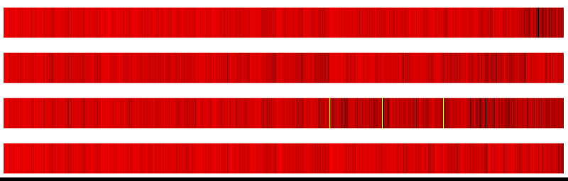
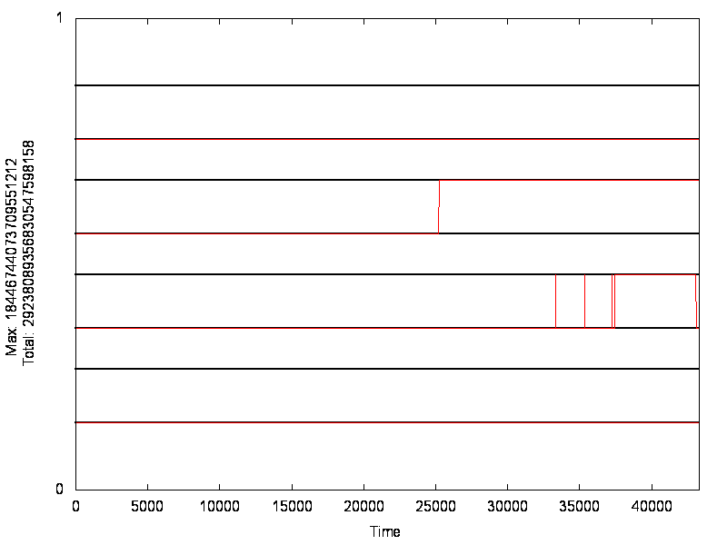
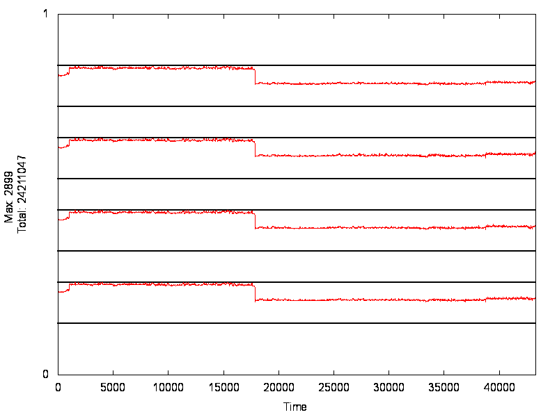
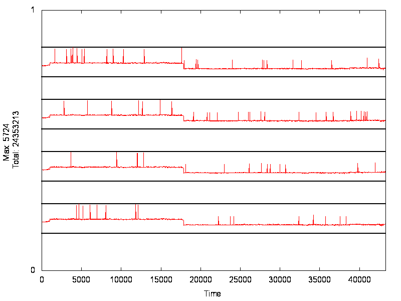
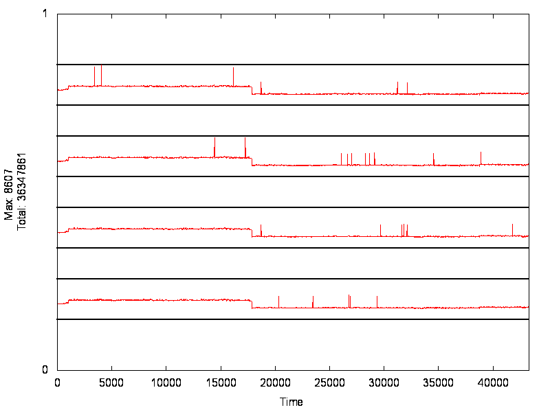
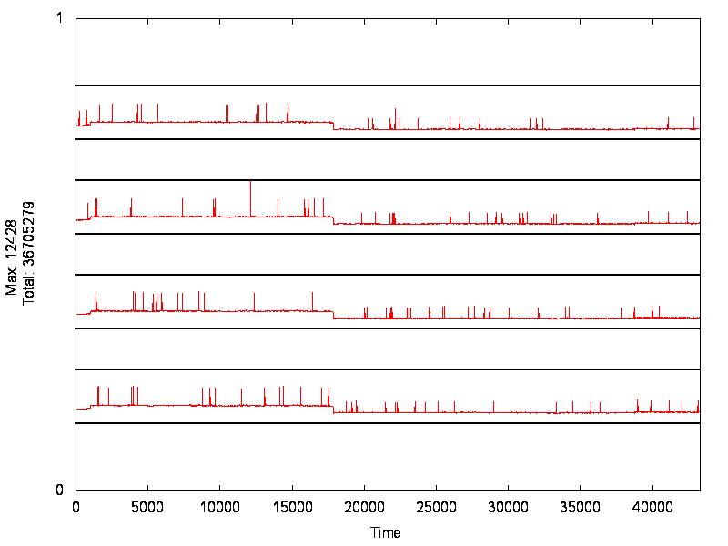
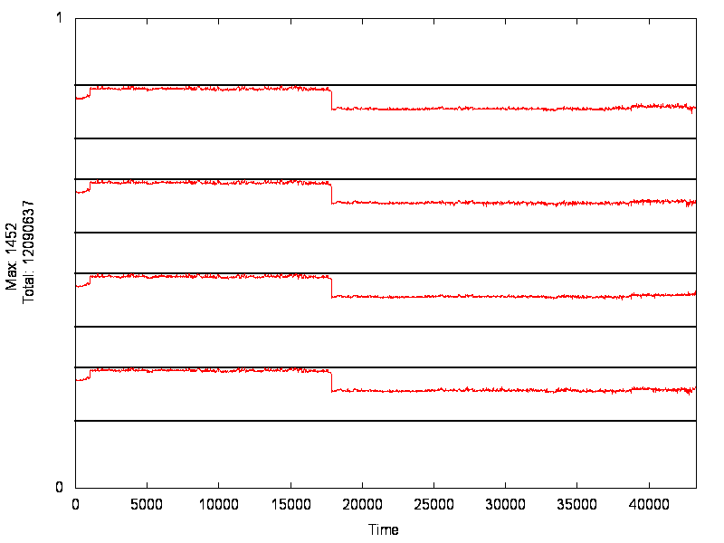
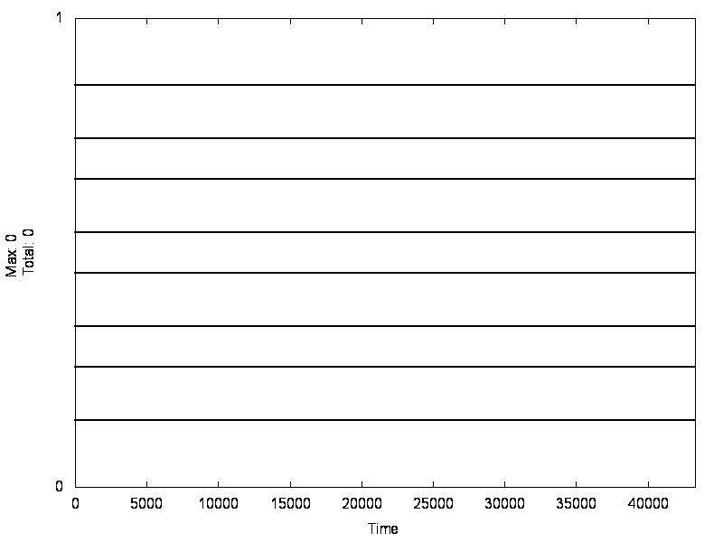
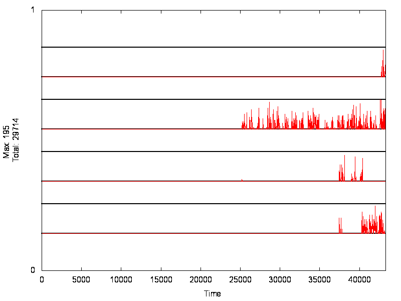

State

Bytes Used

Node Locks (First Ok)

Node Locks (First Failed)

Derived Facts

Consumed Facts

Rules Run

Sent Facts (in same thread)

Sent Facts (to other thread)

Sent Facts (to other thread now, indexing included)

Stolen Nodes

Set Priority (in same thread)
Set Priority (in another thread)